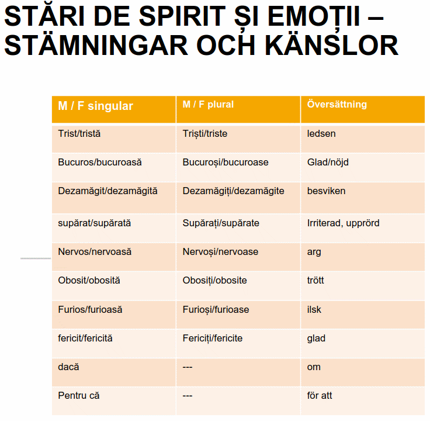

I rumänskan böjs adjektiven efter kön genom att man lägger till -ă för feminina substantiv. Färger räknas till adjektiven, men det finns några undantag från böjningsregeln:
|
|
Singular |
Plural |
||
Färg |
Svenska |
Mask, neutrum |
Femininum |
Mask, neutrum |
Femininum |
|
|
|
|
|
|
Roșu |
röd, rött |
roșu |
roșie |
roșii |
roșii |
Albastru |
blå, blått |
albastru |
albastră |
albastri |
albastre |
Negru |
svart |
negru |
negră |
negri |
negre |
Portucaliu |
orange |
portocaliu |
portocalie |
portocalii |
portocalii |
Oranj |
orange |
|
|
|
|
Mov |
lila, lavendel (mörk) |
mov |
mov |
mov |
mov |
Gri |
grå |
gri |
gri |
gri |
gri |
Galben |
gul |
galben |
galbenă |
galbeni |
galbene |
Roz |
lila (ljus) |
roz |
roz |
roz |
roz |
Maro |
brun |
maro |
maro |
maro |
maro |
Verde |
grön |
verde |
verde |
verzi |
verzi |
Alb |
vit |
alb |
albă |
albi |
albe |
Exempel:
O bluză (feminin singular) – două bluze (plural) * en blus / två blusar
Un pantalon (masculin singular) – doi pantaloni (plural) * en byxa, två byxor
Eu am o bluză roșie și pantaloni negri

Adjektivens komparation i positiv, komparativ och superlativ gör som i svenskan med ’mer’ och ’mest’ och framför adjektivet jämför ’mer erfaren’ och ’mest erfaren’
Komparativ får man genom att lägga till mai + adjektivet t.ex. mai ușor (lättare), mai ieftin (billiggare), mai scump (dyrare), mai bun (bättre)
Superlativ får man genom att lägga till cel + mai + adjektivet – notera att både cel och adjektivet böjs efter substantivet.